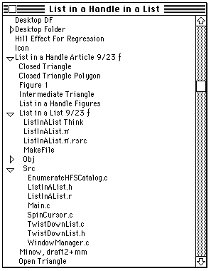
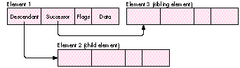
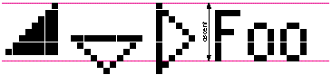

Much of the data you manage on a Macintosh has a hierarchical nature. This article
shows how your application can provide a clear, coherent data organization with a
user-controlled display by using classic linked lists, storing the list data in handles,
and displaying it with the List Manager. A triangular button mechanism, similar to
that used in the Finder to open and close folders in list views, lets the user decide how
much data to view on the screen.
If your application makes its hierarchical data accessible but not overwhelming, it
will have an advantage over applications that provide only two alternatives -- "throw
it all on the screen" or "hide everything." You can find many examples of flexible
organization: The Finder presents file and folder information in a variety of display
formats revealing more or less information according to the user's own desires.
Document-based applications such as NewsWatcher provide a hierarchy of text
information. The JMP statistical application provides buttons that reveal more
detailed information about an analysis. Programming languages such as Frontier allow
the programmer to display as much of a module's code as is needed.
This article shows how to do the following:
The accompanying code on this issue's CD includes a sample library that stores data,
displays it, and manages the buttons, and a simple application that uses the library.
The techniques described in the article are appropriate for displaying and organizing
moderate amounts of data; they're less useful for static data or large amounts of data
and are inefficient with small amounts of data.
Figure 1 shows a Finder-like window that was created with this library; the files
displayed are from the sample library. I've called the libraryTwistDown to emphasize
how the display acts when you click the buttons. The Finder development team calls the
buttonstriangular buttons .

Figure 1. Window created with TwistDown library
There isn't much in this article on linked lists or handles; I assume you struggled with
"classical" list processing when you learned to program and have done enough
programming on the Macintosh to understand how handle-based storage operates. Keep
in mind that two kinds of lists are discussed here: linked lists and Macintosh List
Manager display lists. To keep confusion to a minimum,element refers to a component
of a linked list andcell refers to a component of a List Manager list. Note also that
linked lists contain the data, while the List Manager list only controls the appearance
of that data. A good understanding of the List Manager is needed to follow the code
examples later in the article. (For details on the List Manager, seeInside Macintosh:
More Macintosh Toolbox , or Inside Macintosh Volume IV.)
In the context of this article, a list element is a chunk of data, a few flags, and two
linkages. This section discusses the linkages, which connect list elements into
sequences and hierarchies, and the creation and disposal of list elements. The flags,
which simplify formatting the data, are discussed later in the section "Controlling Data
Appearance."
Figure 2 illustrates the linkages that connect list elements. The important thing to
remember about the hierarchical linked lists we're using is that any element may have
asuccessor -- the sibling element that follows it -- and adescendant -- a child
element that begins a lower level of the hierarchy. For example, a document outline
has a sequence of chapters (siblings) and each chapter has, as its descendants, a
sequence of sections.
In the sample code, each list element is stored in a handle. This allows the Memory
Manager to reorganize memory to store data efficiently. However, don't forget that the
application program is responsible for disposing of data that's no longer needed.
Two library functions manage the list elements: MakeTwistDownElement creates an
element and connects it to the list hierarchy and DisposeTwistDownElement deletes an
element along with its descendants and successors.

Figure 2. List element organization
CREATING A LIST ELEMENT
Listing 1 shows the definition of our element structure, TwistDownRecord. Each field
of this structure will be explained as it's encountered in the sample code.
Listing 1. TwistDownRecord
struct TwistDownRecord {
struct TwistDownRecord **nextElement; /* -> successor element */
struct TwistDownRecord **subElement; /* -> descendant element */
short indentLevel; /* Indentation depth */
unsigned short flag; /* Control flags */
unsigned short dataLength; /* Actual data length */
unsigned char data[1]; /* Data to display */
};
typedef struct TwistDownRecord TwistDownRecord,
*TwistDownPtr, **TwistDownHandle;
MakeTwistDownElement (Listing 2) is called with the data to store in the element and
a handle to its predecessor. The predecessor is either NULL or the previous (elder)
sibling element. For example, when creating element 3 in the list shown in Figure 2,
the previous element is element 1.
TwistDownRecord is a variable-length structure and NewHandle creates an instance
that's large enough to hold the caller's data record. The structure definition, however,
contains one bit of trickery that's required by the ANSI C standard -- it must specify
at least one byte for the data [] placeholder. This is why the parameter to NewHandle
adjusts the handle size to eliminate the extra byte.
DISPOSING OF A LIST ELEMENT
The DisposeTwistDownHandle function disposes of a list element and then disposes of
its descendant and successor lists. To dispose of an entire list, call this function with
the first list element.
A simplified version of DisposeTwistDownHandle is shown in Listing 3. The library
implementation allows the application developer to specify a function that's called
when disposing of each element in the list. This is needed if an application has to store
complex structures -- themselves containing Ptr or Handle references -- in a
TwistDownHandle.
Listing 2. MakeTwistDownElement
OSErr MakeTwistDownElement(TwistDownHandle previousElement,
short indentLevel,
unsigned short dataLength,
Ptr dataPtr,
TwistDownHandle *result)
{
TwistDownHandle twistDownHandle;
twistDownHandle =
(TwistDownHandle) NewHandle(sizeof(TwistDownRecord)
- sizeof(unsigned char) + dataLength);
*result = twistDownHandle;
if (twistDownHandle != NULL) {
if (previousElement != NULL)
(**previousElement).nextElement = twistDownHandle;
(**twistDownHandle).nextElement = NULL;
(**twistDownHandle).subElement = NULL;
(**twistDownHandle).indentLevel = indentLevel;
(**twistDownHandle).flag = 0;
(**twistDownHandle).dataLength = dataLength;
if (dataPtr != NULL)
BlockMove(dataPtr, (**twistDownHandle).data, dataLength);
}
return (MemError());
}
Listing 3. DisposeTwistDownHandle
void DisposeTwistDownHandle(TwistDownHandle twistDownHandle)
{
TwistDownHandle nextElement, subElement;
while (twistDownHandle != NULL) {
nextElement = (**twistDownHandle).nextElement;
subElement = (**twistDownHandle).subElement;
DisposeHandle((Handle) twistDownHandle);
if (subElement != NULL)
DisposeTwistDownHandle(subElement);
twistDownHandle = nextElement;
}
}
Note that DisposeTwistDownHandle is a recursive function; it calls itself to dispose of
the descendants of a hierarchy. If it's called with the list shown in Figure 2, it disposes
of elements in the order 1, 2, and 3.
Using recursion simplifies the list-management algorithms in the TwistDown
function library. However, it's not without its pitfalls in the real world. Each time a
function such as DisposeTwistDownHandle encounters a subelement list, it calls itself
to dispose of that list, and each of these calls uses stack space. While this isn't usually
a problem for applications, you should avoid recursive algorithms in device drivers or
other nonapplication code segments because they must work within the constraints of
some other application's stack.*
Once the data is organized as a hierarchical list, the application could simply display
the whole list by just storing handles to the list elements in List Manager cells.
However, if your application lets the user control how much of the data is displayed,
there must be a way for the user to browse through the data and to specify which
elements are visible and which are hidden.
A familiar mechanism for doing this exists in the Finder, where small buttons indicate
which cells have subhierarchies and whether the subhierarchy is visible. These
triangular buttons have two stable states: one for closed (invisible) hierarchies and
one for open (visible) hierarchies. There are also three transient states: an
intermediate button is displayed briefly when the user clicks a triangular button to
change between the open and closed states; and the closed and open buttons are drawn
filled when a mouse-down event is located on the button. To manage these buttons and
the display of visible data, each list element needs a few flags and an indentation
variable. These are stored in the TwistDownRecord structure.
The indentation variable -- indentLevel -- specifies the hierarchical depth of an
element and is used to display sublists so that the data for an element appears under its
parent, but indented to show its place in the hierarchy.
The bits in the flag field are used to record the record's state and to communicate
between the application and the List Manager's list definition function (LDEF):
/* These are the values that can appear in the flag word. */ #define kHasTwistDown 0x0001 /* This element has a sublist */ #define kShowSublist 0x0002 /* Display the sublist content */ #define kOldShowSublist 0x0004 /* Saved kShowSublist state */ #define kSelectedElement 0x0008 /* Copy "selected" from list */ #define kDrawButtonFilled 0x0010 /* Signal "mouseDown" in button */ #define kOnlyRedrawButton 0x0020 /* Signal "tracking mouse" */ #define kDrawIntermediate 0x0040 /* Draw the animation polygon */ #define kEraseButtonArea 0x0080 /* Need complete button redraw */
The flag field is defined as an unsigned short with explicitly defined bits rather
than as a bitfield, which would have made the program slightly easier to read.
However, the ANSI C standard doesn't specify how the bits in a bitfield are arranged,
and different compilers are free to choose their own organization of the bits. This
means that if you write parts of your code using several compilers, or distribute
modules in object form for others to use, you may cause a debugging nightmare. This is
especially true if you use bitfields to construct data records that are sent in network
messages between different systems. The flag bits could have been defined as an enum,
but this can also cause portability problems. Using explicit bit definitions will also
make it easier to convert your code to run on the Power Macintosh. *
The first four flag bits have the following meanings:
The other flag bits are needed to handle mouse events. They're set by the mouse-down
event handler and the LDEF references them to control its actions:
The TwistDown library uses the following four macros internally to access the flag
word:
#define SetTDFlag(tdHandle, mask) ((**tdHandle).flag |= (mask)) #define ClearTDFlag(tdHandle, mask) ((**tdHandle).flag &= ~(mask)) #define InvertTDFlag(tdHandle, mask) ((**tdHandle).flag ^= (mask)) #define TestTDFlag(tdHandle, mask) (((**tdHandle).flag &(mask)) != 0)
When you first look at the List Manager, it may appear to be the solution to all your
display needs. Unfortunately, it has a number of characteristics that restrict its
usefulness. It's designed to store limited amounts of data, and performance slows
appreciably as you increase the number of cells or the amount of data stored in the
cells. Also, if your list cells are not all the same size or your application needs fine
control over scrolling, you'll probably find life simpler if you create your own
function library. For example, both MacApp and the THINK Class Library offer
flexible libraries for displaying and managing structured data. However, the List
Manager serves well for straightforward lists of a small number of items -- and with
the addition of the triangular buttons it becomes a very useful tool.
The TwistDown subroutine library creates a one-column list with a vertical scroll
bar. The code has only two unusual features:
When you recompile this program to run on a Power Macintosh as a "native"
application (rather than in 680x0-compatibility mode), you'll have to redo this
sequence slightly. The time to worry about conversion is now, before your customers
are tapping you on the shoulder asking, "Not today? How about next Tuesday?" There's
more on converting for Power Macintosh at the end of this article. *
Note that there are two separate drawing procedures: the twist-down LDEF manages
the buttons and drawing for simple text displays, while the application program can
specify its own drawing function to draw more complex data.
THE TWISTDOWNPRIVATERECORD
The twist-down LDEF requires a small amount of global information to properly
process the list. This is stored in a handle-based structure defined as shown in Listin g
4. Two Boolean variables in this record haven't been described: canHiliteSelection and
isLeftJustify. The canHiliteSelection field controls whether the LDEF highlights
selected cells. The isLeftJustify flag is set for left-to-right languages (such as
English) and cleared for languages such as Arabic and Hebrew. This flag isn't used in
the code shown in this article, but the TwistDown library on the CD shows how an
application might handle a right-to-left language.
CREATING TRIANGULAR BUTTON POLYGONS
The triangular buttons are defined as QuickDraw polygons, rather than as bitmaps,
with the advantage that the function is independent of the list cell size and script
direction. This is useful for localization or for programs used by people who are
visually impaired or have diminished motor skills: the program will display larger
buttons if the application or user chooses a large font. It also lets the program draw
the closed and intermediate buttons pointing in the proper direction for right- to-left
script systems such as Arabic and Hebrew. Figure 3 illustrates an expanded view of
the triangular buttons. As an example, the code in Listing 5 shows how you would
create the polygons for a left-to-right script. See the sample on the CD for more
general code, which accounts for the writing direction of the script.
Listing 4. TwistDownPrivateRecord
struct TwistDownPrivateRecord {
TwistDownDrawProc drawProc; /* User-defined drawing function */
PolyHandle openTriangle; /* The expanded button */
PolyHandle closedTriangle; /* The closed button */
PolyHandle intermediateTriangle; /* Animation */
short tabIndent; /* Child indentation */
short fontSize; /* For TextSize */
short fontNumber; /* For TextFont */
Boolean canHiliteSelection; /* Highlight cell OK? */
Boolean isLeftJustify; /* GetSystJust value */
short triangleWidth; /* Button width */
};
typedef struct TwistDownPrivateRecord TwistDownPrivateRecord,
*TwistDownPrivatePtr, **TwistDownPrivateHandle;

Figure 3. The triangular buttons
After creating the List Manager list, the application builds its hierarchical structure
(the linked list). List elements are created by the MakeTwistDownElement function.
As described earlier in "Creating a List Element," MakeTwistDownElement obtains the
necessary (handle) storage, initializes all flags, and stores the application data in the
list element. It also links the new element to the previous (elder sibling) element in
the list.
Normally, a twist-down list is built by a recursive function such as the one shown in
Listing 6, MyBuildHierarchy. MyBuildHierarchy calls a function named MyGetInfo
that stores a small amountof data into a structure called MyInfoRecord. Neither of
these is defined here: they're application specific.
After you've built the data hierarchy, the next step is to determine which elements are
visible initially and build the visible list. The CreateVisibleList function constructs a
new visible display given the head of a hierarchical list and a List Manager handle. It
stores the head in the first cell (cell [0, 0]) and calls BuildVisibleList to store the
visible elements in the subsequent cells.
Listing 5. Creating triangular button polygons
GetFontInfo(&info);
buttonSize = info.ascent; /* The button height */
buttonSize &= ~1; /* Round down to an even number */
halfSize = buttonSize / 2; /* For 45-degree triangles */
intermediateSize = (buttonSize * 3) / 4;
(**privateHdl).openTriangle = OpenPoly();
MoveTo(0, halfSize);
LineTo(buttonSize, halfSize);
LineTo(halfSize, buttonSize);
LineTo(0, halfSize);
ClosePoly();
(**privateHdl).closedTriangle = OpenPoly();
MoveTo(halfSize, 0);
LineTo(buttonSize, halfSize);
LineTo(halfSize, buttonSize);
LineTo(halfSize, 0);
ClosePoly();
(**privateHdl).intermediateTriangle = OpenPoly();
MoveTo(intermediateSize, 0);
LineTo(intermediateSize, intermediateSize);
LineTo(0, intermediateSize);
LineTo(intermediateSize, 0);
ClosePoly();
Listing 6. Building a twist-down list
TwistDownHandle MyBuildHierarchy(ListHandle theList,
short indentLevel)
{
OSErr status;
TwistDownHandle previousElement, thisElement, firstElement;
MyInfoRecord myInfoRecord;
Boolean isHierarchy;
EventRecord currentEvent;
firstElement = NULL;
previousElement = NULL;
/*** Other initialization here */
do {
/*** Call EventAvail here to give time to background tasks.*/
EventAvail(everyEvent, ¤tEvent);
status = MyGetInfo(&myInfoRecord, &isHierarchy);
if (status == noErr)
status = MakeTwistDownElement(previousElement,
indentLevel, sizeof(MyInfoRecord),
(Ptr) &myInfoRecord, &thisElement);
if (status == noErr) {
/*** Remember the first element in this sibling */
/*** sequence; */
/*** it's needed by our caller. */
if (firstElement == NULL)
firstElement = thisElement;
/*** If this data begins a hierarchy, descend by */
/*** calling this function recursively. Store the */
/*** first element of the new sublist in the */
/*** subElement pointer. (flag & kHasTwistDown) */
/*** will be TRUE even if the child list is empty. */
if (isHierarchy) {
SetTDFlag(thisElement, kHasTwistDown);
(**thisElement).subElement =
MyBuildHierarchy(theList, indentLevel + 1);
}
/*** Set sibling linkage for next element. */
previousElement = thisElement;
}
} while (status == noErr);
return (firstElement);
}
BuildVisibleList is called in two situations: when the application first constructs the
list and when the user changes the visual hierarchy by clicking a triangular button. It
calls CountVisibleElements to determine the number of cells needed, adjusts the size of
the list to the desired number, and calls a recursive function, SetElementsInList, to do
the actual storage. SetElementsInList needs what is essentially a global counter to know
which cell will receive the current list element.
BuildVisibleList associates list cells with elements in the hierarchical list as follows:
The utility functions used in adding and removing elements from the List Manager list
aren't shown here but may be examined in the sample library. BuildVisibleList uses
several local, recursive functions to process the hierarchical list that all have a
similar overall structure. For example, CountVisibleElements (Listing 7) computes
the number of list elements that should be displayed.
Now that we have a visible list, we're ready to let the user manipulate the hierarchy
by clicking the triangular buttons. When the user presses the mouse button, the
application decides whether the cursor is in one of its windows and whether this
window might just happen to have a twist-down list. If so, the application calls
DoTwistDownClick with the list handle, a pointer to an event record, and a pointer to a
Cell structure that identifies the selected cell on exit. DoTwistDownClick returns one
of five action states, as shown in Table 1.
Listing 7. CountVisibleElements
short CountVisibleElements(TwistDownHandle twistDownHandle)
{
short result;
result = 0;
while (twistDownHandle != NULL) {
++result;
if (TestTDFlag(twistDownHandle, kShowSublist))
result +=
CountVisibleElements((**twistDownHandle).subElement);
}
return (result);
}
Table 1
DoTwistDownClick action states
| Action State | Meaning |
| kTwistDownNotInList | The mouse-down event was not in the list area. |
| Your application should handle this event. | |
| kTwistDownNoClick | The user pressed the mouse button in a triangular |
| button but released it outside the button. Your | |
| application should ignore this click. | |
| kTwistDownButtonClick | The mouse click was in the triangular button. |
| DoTwistDownClick has handled this, but your | |
| application may need to do further processing. | |
| kTwistDownClick | The user clicked, once, on list data. Your |
| application may need to do further processing. | |
| kTwistDownDoubleClick | The user double-clicked on list data. Your |
| application may need to do further processing. |
The techniques described here for handling mouse events can be used to create
lists whose cells contain other kinds of active elements, such as buttons or checkboxes
. *
DoTwistDownClick, together with the subroutines it calls, hides a fairly complex
process consisting of the following steps; these steps are described further in the
following sections and illustrated in the simplified version of DoTwistClick shown in
Listing 8.
Did the user press in the list rectangle?Get the mouse location in local
coordinates and the window rectangle that contains the list and its scroll bar. If the
mouse location is not in the list, just return.
Did the user press a triangular button?The user pressed in the list area; is it
in a button? The code sample on the CD has a test for left or right alignment (so that
you can use the function with Arabic or Hebrew script systems) but that test is
ignored here. The central algorithm determines the rectangle that encloses all the cell
buttons. If the cursor is in that area, it then checks whether there is a cell under the
cursor and, if so, whether this cell actually displays a button.
Track the mouse while it's in the button area.If we get past all that, we know
that the user pressed a triangular button. The click-handler sets and clears flag bits
that the LDEF references when redrawing the list cell. The LDEF starts by drawing the
button in its active (filled) state. Note that each call to LDraw redraws the list cell --
but, as pointed out earlier, the kOnlyRedrawButton flag prevents the entire display
line from blinking.
The sequence beginning with "if (StillDown ())" in the code shows how you can track
your own visual elements, such as icons, as if they were normal buttons. You can also
use this technique to add checkboxes or other button-like objects to list cells.
The user released the mouse button.When the user releases the mouse button in
the triangular button area, the application changes the button state (for example, from
to
). This is a two-step process that briefly flashes an intermediate button (
) to give the user the illusion of change. While your application would certainly work
without this subtle touch, it wouldn't look as good. Call
theExpandOrCollapseTwistDownList function after flashing the intermediate button to
redraw the button in its new state. Note that kEraseButtonArea is set so that the
intermediate button is drawn properly.
Listing 8. DoTwistDownClick
TwistDownClickState
DoTwistDownClick(ListHandle theList,
const EventRecord *eventRecordPtr,
Cell *selectedListCell)
{
Cell theCell; /* Current list cell */
Rect hitRect; /* The button area in this cell */
Boolean inHitRect; /* Cursor is in the button area */
Boolean newInHitRect; /* Cursor moved into the button */
short cellHeight; /* Height of a list cell */
short visibleTop; /* Top pixel in the list area */
TwistDownHandle twistDownHandle;/* Current twist-down element */
TwistDownPrivateHandle privateHandle; /* Private data */
Point mousePt; /* Where the mouse is located */
TwistDownClickState result; /* Function result */
long finalTicks; /* For the Delay function */
/*** 1. Did the user press in the list rectangle? */
mousePt = eventRecordPtr->where;
GlobalToLocal(&mousePt); /* Mouse in local coordinates */
hitRect = (**theList).rView; /* Here's the list area */
hitRect.right += kScrollBarWidth;/* Include the scroll bar, too*/
if (PtInRect(mousePt, &hitRect) == FALSE) {
result = kTwistDownNotInList;
return (result);
}
/*** 2. Did the user press a triangular button? */
privateHdl = (TwistDownPrivateHandle) (**theList).userHandle;
hitRect.right = (**theList).rView.left + (**theList).indent.h
+ (**privateHdl).triangleWidth;
inHitRect = FALSE;
if (PtInRect(mousePt, &hitRect)) {
/*** The mouse is in the button area; is there a cell? */
cellHeight = (**theList).cellSize.v;
theCell.h = 0;
theCell.v = ((mousePt.v - (**theList).rView.top) / cellHeight
+ (**theList).visible.top;
/*** This is a list cell that should have data. Get the */
/*** twistdown element handle. If there's no data, or no */
/*** hierarchy, the click will be ignored. */
twistDownHandle = GetTwistDownElementHandle(theList, theCell);
if ((twistDownHandle != NULL)
&& TestTDFlag(twistDownHandle, kHasTwistDown))
inHitRect = TRUE;
}
if (inHitRect == FALSE) {
/*** There's no button here, or the user didn't click it. */
/*** Just call the normal list click-handler and return */
/*** its value. This is needed to handle scroll bars */
/*** correctly. */
if (LClick(mousePt, eventRecordPtr->modifiers, theList))
return (kTwistDownDoubleClick);
else {
return (kTwistDownClick);
}
}
/*** 3. Track the mouse while it's in the button area. */
SetTDFlag(twistDownHandle,
kDrawButtonFilled | kOnlyRedrawButton);
LDraw(theCell, theList);
/*** Set hitRect to the triangular button dimensions. */
hitRect.top = (theCell.v - (**theList).visible.top) * cellHeight
+ (**theList).rView.top;
hitRect.bottom = hitRect.top + cellHeight;
/*** Track the mouse while it's still down: if it moves into */
/*** the rectangle, redraw it filled; if it moves out, redraw */
/*** it unfilled. */
if (StillDown()) {
while (WaitMouseUp()) {
GetMouse(&mousePt);
newInHitRect = PtInRect(mousePt, &hitRect);
if (newInHitRect != inHitRect) {
/*** The cursor moved into or out of the triangle. */
InvertTDFlag(twistDownHandle, kDrawButtonFilled);
LDraw(theCell, theList);
inHitRect = newInHitRect;
}
}
}
/*** 4. The user released the mouse button. */
if (inHitRect == FALSE) {
/*** The user canceled the operation by releasing the */
/*** mouse outside the triangular button area. */
/*** drawButtonFilled will normally be clear. It can be */
/*** set, however, if the user clicks so briefly that the */
/*** StillDown() test above is FALSE */
if (TestTDFlag(twistDownHandle, kDrawButtonFilled)) {
ClearTDFlag(twistDownHandle), kDrawButtonFilled);
LDraw(theCell, theList);
}
ClearTDFlag(twistDownHandle), kOnlyRedrawButton);
return (kTwistDownNoClick);
}
SetTDFlag(twistDownHandle,
(kDrawIntermediate | kEraseButtonArea));
LDraw(theCell, theList);
Delay(kAnimationDelay, &finalTicks);
ClearTDFlag(twistDownHandle,
(kDrawIntermediate | kDrawButtonFilled | kEraseButtonArea));
ExpandOrCollapseTwistDownList(theList, theCell);
*selectedListCell = theCell;
ClearTDFlag(twistDownHandle, kOnlyRedrawButton);
return (kTwistDownButtonClick);
}
EXPAND OR COLLAPSE THE HIERARCHY
ExpandOrCollapseTwistDownList (Listing 9) is normally called directly by
DoTwistDownClick, as shown in the preceding section. It can also be called directly by
the application. When called, it inverts the "expansion" state of the designated list cell,
redraws the triangular button, and calls BuildVisibleList (described earlier in
"Creating the Visible Display") to revise the visible hierarchy. Note that
BuildVisibleList will modify the display starting with the current cell: the cells above
will not change and thus need not be modified or redrawn.
When the contents of a list cell change or the display requires updating, the List
Manager calls the TwistDownLDEF function. This function draws the button in its
current state and either draws the list cell (for simple text cells) or calls a
user-defined drawing function to draw more complex cells. The code is generally
straightforward (again, ignoring right or left considerations). Basically, it examines
the state of the kOnlyRedrawButton flag and proceeds as follows: * If the flag is set,
"shrink" the display rectangle so that only the button is redrawn. Choose the correct
triangular polygon and draw it in its proper state. * If the flag is clear, draw the cell
data and the triangular polygon.
Let's look more closely at the TwistDownLDEF drawing code (Listing 10):
Listing 9. ExpandOrCollapseTwistDownList
twistDownHandle = GetTwistDownElementHandle(theList, theCell);
if ((twistDownHandle != NULL)
&& TestTDFlag(twistDownHandle, kHasTwistDown)) {
InvertTDFlag(twistDownHandle, kShowSublist);
/*** Redraw the triangular button in its new state. */
ClearTDFlag(twistDownHandle, kDrawButtonFilled);
SetTDFlag(twistDownHandle,
(kOnlyRedrawButton | kEraseButtonArea));
LDraw(theCell, theList);
ClearTDFlag(twistDownHandle,
(kOnlyRedrawButton | kEraseButtonArea));
/*** If some other part of the list will change, rebuild the */
/*** List Manager cells and redraw the list. */
if ((**twistDownHandle).subElement != NULL)
BuildVisibleList(theList, theCell.v);
}
Listing 10. TwistDownLDEF drawing code
pascal void TwistDownLDEF(
short listMessage,
Boolean listSelect,
Rect *listRect,
Cell listCell, /* Unused */
short listDataOffset, /* Unused */
short listDataLen,
ListHandle theList
)
{
short indent; /* Cell data indentation */
TwistDownHandle twistDownHandle; /* The cell data */
TwistDownPtr twistDownPtr; /* Cell data (locked handle) */
short cellSize; /* sizeof(TwistDownHandle) */
PolyHandle polyHandle; /* Button polygon */
Point polyPoint; /* Where to draw the button */
Rect viewRect; /* Actual cell drawing area */
signed char elementLockState; /* twistDownHandle lock state*/
#define TestFlag(flagBit) ((theFlag & (flagBit)) != 0)
. . . /*** Other LDEF processing isn't shown. */
/*** 1. Determine what to draw. */
cellSize = sizeof twistDownHandle;
LGetCell(&twistDownHandle, &cellSize, listCell, theList);
if ((cellSize == sizeof twistDownHandle)
&& twistDownHandle != NULL) {
/*** There is a list element. (This if statement extends */
/*** all the way to the end of the sequence.) Lock the */
/*** element in memory and look at the flag values. Set */
/*** viewRect to the part of the List Manager cell that */
/*** will be drawn. */
elementLockState = HGetState((Handle) twistDownHandle);
HLock((Handle) twistDownHandle);
twistDownPtr = (*twistDownHandle);
privateHdl = (TwistDownPrivateHandle) (**theList).userHandle;
viewRect = *listRect;
theFlag = (*twistDownPtr).flag;
if (TestFlag(kOnlyRedrawButton)) {
/*** Shrink the display area when only the button is */
/*** redrawn. */
viewRect.right = viewRect.left + (**theList).indent.h
+ (**privateHdl).triangleWidth;
}
if (TestFlag(kOnlyRedrawButton) == FALSE
|| TestFlag(kEraseButtonArea))
EraseRect(&viewRect);
/*** 2. Draw the triangular button. */
if (TestFlag(kHasTwistDown)) {
polyPoint.v = listRect->top + 1;
polyPoint.h = listRect->left + (**theList).indent.h
+ kTriangleOutsideGap;
if (TestFlag(kDrawIntermediate))
polyHandle = (**privateHdl).intermediateTriangle;
else if (TestFlag(kShowSublist))
polyHandle = (**privateHdl).openTriangle;
else
polyHandle = (**privateHdl).closedTriangle;
DrawTriangle(polyHandle, polyPoint,
theFlag & kDrawButtonFilled);
}
/*** 3. Draw the cell data. */
if (TestFlag(kOnlyRedrawButton) == FALSE
&& (*twistDownPtr).dataLength > 0) {
/*** Indent the text to show the depth of the */
/*** hierarchy. Then build a display rectangle for the */
/*** cell text and set the pen to the leftmost */
/*** position of the text. */
indent = (**theList).indent.h
+ (**privateHdl).triangleWidth
+ ((**privateHdl).tabIndent
* (*twistDownPtr).indentLevel);
viewRect = *listRect;
viewRect.left += indent;
TextFont((**privateHdl).fontNumber);
TextSize((**privateHdl).fontSize);
/*** If the user didn't provide a drawing procedure, */
/*** draw a text string. Otherwise, call the user's */
/*** procedure. */
if ((**privateHdl).drawProc == NULL) {
MoveTo(viewRect.left, viewRect.top
+ (**theList).indent.v);
DrawText((*twistDownPtr).data, 0,
(*twistDownPtr).dataLength);
}
else {
/* Call user's drawing function */
(*(**privateHdl).drawProc)(
theList, /* The list handle */
(const Ptr) (*twistDownPtr).data,/* Data to draw */
(*twistDownPtr).dataLength, /* Size of the data */
&viewRect); /* Where to draw it */
}
} /* If we're drawing cell data */
HSetState((Handle) twistDownHandle, elementLockState);
} /* If we have cell data */
}
THE DRAWTRIANGLE FUNCTION
If you look closely at the triangular buttons on a color or grayscale display, you'll
notice that the button is filled with a grayish background color. (The Finder uses the
color the user assigned to the file, while we use a light gray color.) The DrawTriangle
function called by TwistDownLDEF takes three parameters: the polygon, where it's to
be drawn, and a Boolean that specifies whether the user is currently pressing the
triangular button. DrawTriangle uses the DeviceLoop procedure, DrawThisTriangle,
which calls the actual drawing function for each type of device so that drawing can be
optimized for different screen depths. (See Listing 11.)
The DeviceLoop procedure is described in "DeviceLoop Meets the Interface
Designer," develop Issue 13, and in Inside Macintosh Volume VI.*
The sample program illustrates how you can use twist-down lists to display a
directory of all files on a volume. It's a very simple program and you would be well
advised not to use it on a huge disk with many folders and files, because there's no
protection against storage overflow.
The sample program compiles and runs in five environments: THINK C 6.0,
Metrowerks DR1, and MPW 3.2 for the 680x0-based Macintosh; and, for the Power
Macintosh, Metrowerks DR1 and the MPW provided in the Macintosh on RISC Software
Developer's Kit. Converting the code for Power Macintosh took about one day (it was
my lab exercise when I took the Apple Developer University "PowerPC BootCamp"
course). To learn more about what I did to accomplish this conversion, see "Converting
for Power Macintosh."
When you start up the sample program, it begins enumerating the disk; you can click
to stop it at any time. The hierarchical list is built using the algorithm illustrated
bythe MyBuildHierarchy function, described in the section "Putting Data Into the
List."
Listing 11. DrawTriangle and DrawThisTriangle
typedef struct TriangleInfo { /* Passed to DrawThisTriangle */
PolyHandle polyHandle; /* The polygon to draw */
Point polyPoint; /* Where to draw it */
} TriangleInfo, *TriangleInfoPtr;
static void DrawTriangle(PolyHandle polyHandle,
Point polyPoint,
Boolean isSelected
)
{
TriangleInfo triangleInfo;
RgnHandle drawingRgn;
long savedA5;
/*** Refresh A5 so that we can use the current QuickDraw */
/*** globals. */
savedA5 = SetCurrentA5();
triangleInfo.polyHandle = polyHandle; /* Save our drawing */
triangleInfo.polyPoint = polyPoint; /* parameters. */
/*** Position the polygon properly on the display. */
OffsetPoly(polyHandle, polyPoint.h, polyPoint.v);
if (isSelected)
FillPoly(polyHandle, &qd.black);
else {
/*** Get drawing region and call DeviceLoop to do the work */
drawingRgn = NewRgn();
OpenRgn();
FramePoly(polyHandle);
CloseRgn(drawingRgn);
DeviceLoop(
drawingRgn, /* Region to draw into */
(DeviceLoopDrawingProcPtr) DrawThisTriangle,
(long) &triangleInfo, /* Drawing parameters */
0 /* DeviceLoop flags (ignored) */
);
DisposeRgn(drawingRgn);
}
/*** Frame the button in black and move the polygon back to */
/*** its default [0,0] position. */
FramePoly(polyHandle);
OffsetPoly(polyHandle, -polyPoint.h, -polyPoint.v);
SetA5(savedA5);
}
static pascal void DrawThisTriangle( /* Called by DeviceLoop */
short depth, /* Screen pixel depth */
short deviceFlags, /* Device info (ignored) */
GDHandle targetDevice, /* The display (ignored) */
TriangleInfoPtr triangleInfoPtr /* The data to be drawn */
)
{
RGBColor foreColor;
RGBColor saveForeColor;
RGBColor backColor;
short i;
Rect polyRect;
polyRect = (**(*triangleInfoPtr).polyHandle).polyBBox;
LocalToGlobal(& ((Point *) &polyRect)[0]);
LocalToGlobal(& ((Point *) &polyRect)[1]);
if (depth > 1) {
/*** Drawing in color or grays: fill the triangle with a */
/*** very light gray. */
GetForeColor(&foreColor);
saveForeColor = foreColor;
GetBackColor(&backColor);
/*** This loop sets foreColor to a very light gray. */
for (i = 0; i < 8; i++) {
if (GetGray(GetGDevice(), &backColor,
&foreColor) == FALSE)
break;
}
RGBForeColor(&foreColor);
FillPoly((*triangleInfoPtr).polyHandle, &qd.black);
RGBForeColor(&saveForeColor);
}
else {
/*** Monochrome: erase the interior of the polygon. */
ErasePoly((*triangleInfoPtr).polyHandle);
}
}
Here's a simplified checklist of the kinds of things you'll need to do to convert code for
the Power Macintosh, based on what I did to convert my program (see the sample code
on the CD, especially TwistDownList.c). I borrowed heavily from the document
"Moving Your Source to PowerPC" on the Macintosh on RISC Software Developer's Kit
CD.
#ifdef THINK_C /* THINK C */ #ifdef __powerc /* Power Macintosh */ #ifdef MPW /* MPW: see above */ #ifdef applec /* Apple compilers */
#ifdef __powerc QDGlobalsqd; #endif
#ifdef __powerc
#include "CodeFragmentTypes.r"
resource 'cfrg' (0) {
{
kPowerPC,
kFullLib,
kNoVersionNum, kNoVersionNum,
0, 0,
kIsApp, kOnDiskFlat,
kZeroOffset, kWholeFork,
"MyFirstPowerPCApp"
}
};
#endif
The above list isn't complete by any means, but, together with the sample code, it
should get you started. Also, there are several Developer University courses available
to help bring you up to speed quickly.
So, what's this method of displaying data good for? If you have data that's hierarchical,
coherent, line-oriented, and not too large, you'll find that the twist-down list
functions are both useful and easy to incorporate into your applications. *
Hierarchical. If the data doesn't separate into a strict hierarchy, the presence of
triangular buttons will only confuse your users: they're expecting your application to
operate like the Finder. Also, if the hierarchy is very limited (a single topic with a
block of text), you'll probably find some other solution easier to use.
I wrote the TwistDown library because I wanted to display an AOCE catalog
specification that can contain many internal components of varying size and
complexity. It offered a friendly interface into a structure that is convoluted, warped,
and -- indeed -- twisted.
REFERENCES
MARTIN MINOW (AppleLink MINOW, Internet minow@apple.com) is an aged,
wrinkled hacker who, having determined that it's far too late to whine about his
receding hairline, instead takes perverse delight in informing his young colleagues at
excessive length how much better programming was when you had to punch out your
programs, one machine word after another, on oily paper tape, back in the good old
days when hex digits were KSNJFL, words were 40 bits long, and a supercomputer had
1024 of them. In real life, he works at Apple's Developer Support Center, drinks
beer, and runs marathons.*
ACKNOWLEDGMENTS The TwistDown library is generally based on code from the
NewsWatcher application by Steve Falkenburg. Steve's code is based on code written by
John Norstad, author of Disinfectant. *
Thanks to our technical reviewers Jon Callas, Godfrey DiGiorgi, Steve Falkenburg,
Dave Radcliffe, and Dean Yu. And thanks to Richard Clark for the PowerPC BootCamp
course. *